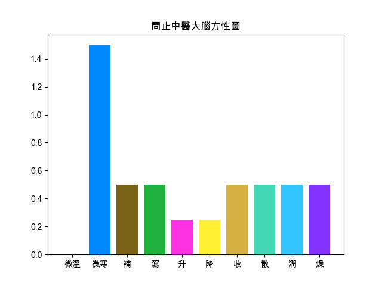

回上頁
【四逆散】
出處
傷寒論
功用
透邪解鬱，疏肝理脾。
應用
膽結石引起的脅肋疼痛。
組成
● 炙甘草 : 補脾和胃，益氣複脈。
● 枳實 : 破氣消積，化痰除痞
● 柴胡 : 疏散退熱，疏肝解郁，升舉陽氣，清膽截瘧
● 白芍 : 養血調經，平肝止痛，斂陰止汗
氣喘
口苦
【組成方劑的單味藥藥性表】
-
溫熱藥
平藥
寒涼藥
補藥
炙甘草☂
白芍☂
平藥
瀉藥
枳實☀ ,柴胡☀
-
升性藥
平藥
降性藥
散性藥
柴胡☀
枳實☀
平藥
收性藥
炙甘草☂ ,白芍☂
